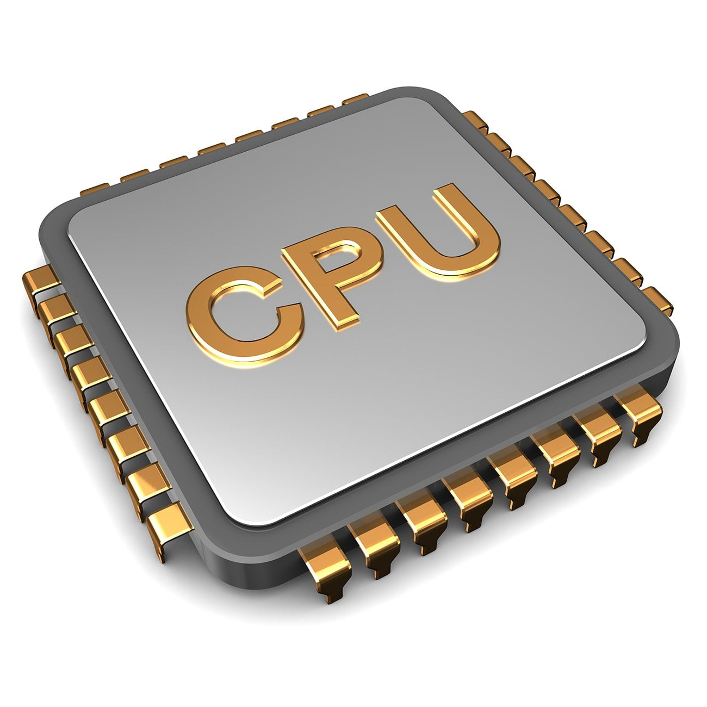

De opdracht
Met informatica hebben wij een PO gekregen waarvoor wij een website moeten maken met behulp van HTML en CSS. We hebben vooral gebruik gemaakt van de elementen die voorkomen in de module van Enigma. Als we extra elementen willen gebruiken voor de site moeten we dit aan de docent vragen, waardoor de site er mogelijk wat simpeler uitziet dan sites van grote bedrijven.
GitHub
Wij hebben gebruik gemaakt van GitHub Desktop om onze code te delen en up-to-date te houden zonder heel veel moeite. Onze code werd op deze manier opgeslagen op beide computers, maar ook op GitHub.
De verwerking van de instructies van de CPU
 Voor de opdracht moeten wij het hebben over de verwerking van de instructies van de CPU. De uitleg hierover staat op de pagina "Verwerking instructies CPU". Als je op de afbeelding hiernaast of in het menu klikt kom je op de pagina.